The LeButterfly Effect: How LeBron Changed the Makeup of the League
By Jack Bruvold | June 11, 2026

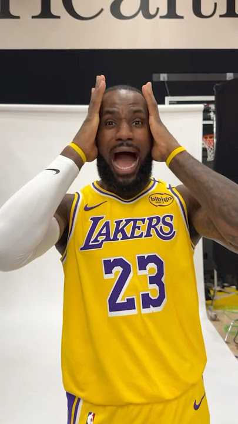
Watching the playoffs this year has been very exciting, with the close games and longer series, and this has just been in the first round. I’ve been enjoying watching the Lakers in particular, only because this may be one of, if not the, last postseasons of LeBron’s career, and even at 41, he still balls out. Watching him has reminded me how much I’ve taken for granted what LeBron has done for the league. Outside of just serving as the face of the league, he actually changed how the game was played. This is evident in the playoffs, where we see these larger, versatile wings take up the ball, something I believe was enabled by LeBron’s success. These players could be grouped into an archetype based on their playstyle and built just by eye, but I wished to do something similar with data, to find out if this change can truly be added to LeBron’s legacy.
First, I retrieved the data that I would use to determine the archetype of each player. I decided on using 36-minute statistics on each player’s scoring, rebounding, and playmaking (Assists, Points, etc.), some advanced stats (Usage, True Shooting), and their physical attributes (height, weight, & age). All of these stats have been collected consistently since the 90’s, so I chose to start my analysis during the 1997-98 season and extend it to the most recent season. I also normalized the data and excluded players who didn’t play a significant amount of time (fewer than 5 minutes a game or less than 25 games) to help narrow down the players that we were looking at. One thing that makes LeBron so special is the combination of his size and offensive abilities, which would be important to have reflected in the archetype. To do this, I scaled all the stats, with weights and heights of the players being scaled up to have more importance, and scoring scaled down, to avoid just placing all of the high-scoring players in one cluster.
While having all this data for each player helps assess their playstyle, it makes it very hard to generate any meaningful visual representation of each player. Thankfully, a useful tool called Uniform Manifold Approximation and Projection (UMAP) can help with this issue. UMAP helps reduce the different variables we have for each player to just 2 new variables that encode roughly the same information. Importantly, UMAP preserves the “closeness” of players, such that players similar to each other in our original statistics will appear close in the UMAP representation of those players. With the UMAP for our data, I was ready to sort these players into archetype clusters.
There are a few different ways to perform clustering, but they all have the same goal of trying to create groups of objects that are similar to each other. I selected K-Means Clustering, which takes all the points and assigns them to an initial group, then the distance between the average of the group and each point is calculated, and the group is updated to fit better. This process is done repetitively until clear groups appear. For this article, I started with the assumption that there would be at least 10 groups/archetypes of players in the league over these years, which I found and plotted over time, with the percentage that this archetype took up in the league.
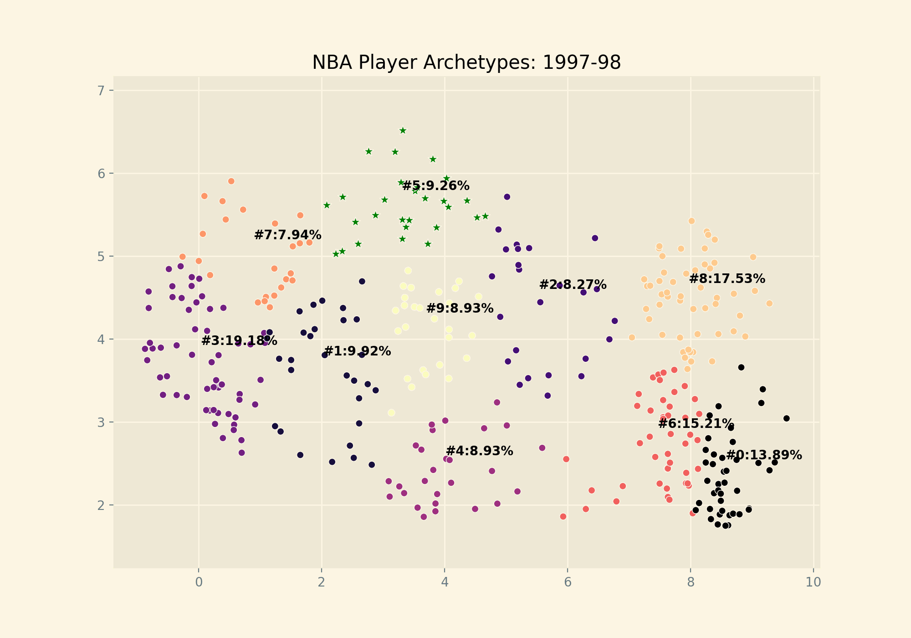
This was the resulting plot, with the x-axis being the values for each player that we generated using the UMAP, with the corresponding archetype’s percentage of players in the league during that season. Because we are examining players like LeBron, I highlighted the players that are in the same cluster as his prime years (23-32), with stars. While we can see the difference between the archetypes, the particular stats and metrics were lost in the UMAP encoding. To remedy this, the table below shows some of the average statistics for each cluster’s players, with LeBron’s cluster in gold.
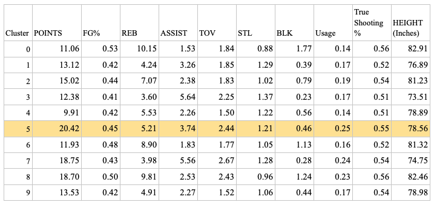
Looking at the average stats for this group, they are larger shooting guards and small forwards that are high scoring with higher usage than most of the other clusters, which aligns with players emerging with/after LeBron.
Now that we have the archetypes that we wished to start with, we can move on to examining how certain archetypes have changed over time. Examining the LeBron subgroup, it seems like there are two separate groups within the whole cluster, with a subgroup shifted up from the rest, as seen in the plot below. The players in the smaller group above include LeBron, Luka, and other larger, offensively gifted players, and have been increasing since 2003, when LeBron entered the NBA. The plot below shows the percentage of players in the LeBron Cluster who have moved up to form that subgroup, as a percentage of the entire archetype.
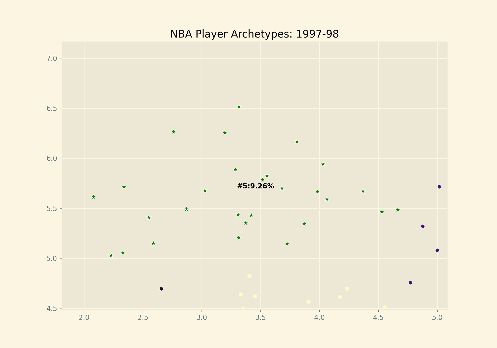
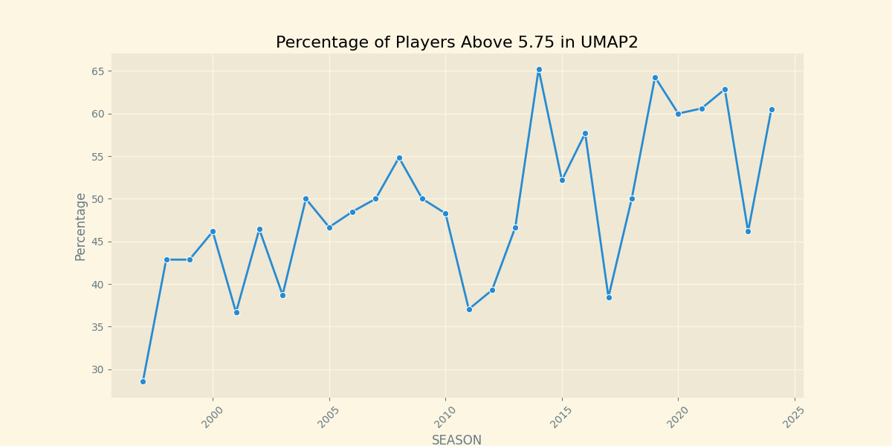
This change in UMAP indicates a change in how these wing/forward players approach the game, in line with the impact I thought LeBron would have. Because the UMAP encoding compresses the stats, the particular change is lost, but going back and looking at the metrics, all of the stats saw some change. Some of these changes are seen elsewhere in the league, such as 3-point attempt trends, which saw a roughly 150% increase since 1997 in both LeBron’s cluster and the league, indicating that it was more league-wide than a particular change caused by LeBron. However, after LeBron entered the league, another offensive stat did increase, assists, more than what was seen in the rest of the clusters, while turnovers stayed mostly the same.
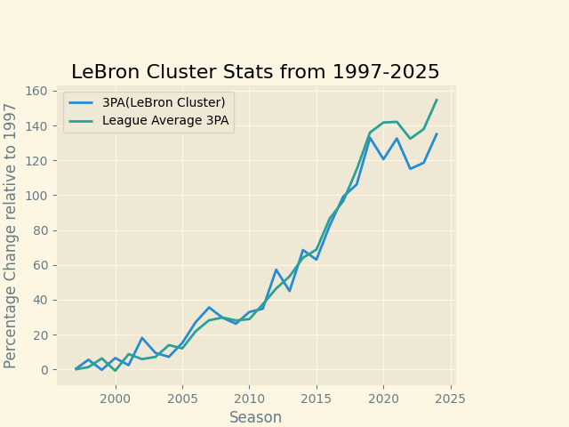
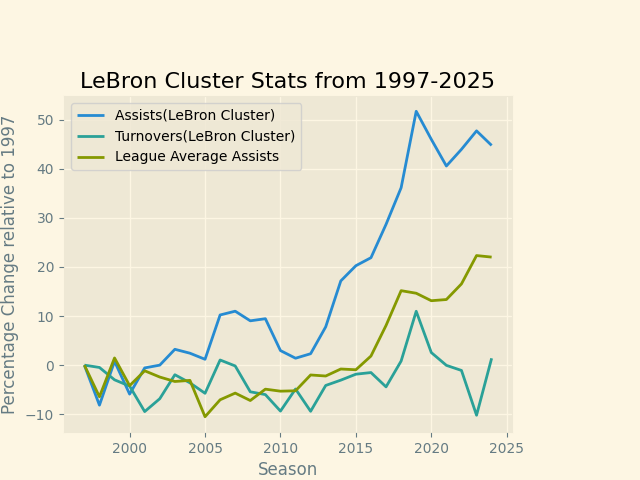
All of this indicates that the LeBron cluster, high-scoring forwards, have been given a bigger offensive responsibility, as they are handling the ball and passing at a higher rate than they did previously, which really started to pick up in the seasons after LeBron entered the league. It is hard to say where this change came from, whether the change came from LeBron opening the door for players of his size to handle the ball more, or whether LeBron gave front offices the confidence to draft more players who play like him.
While there is a clear change in playstyle, I wondered if players who just resembled LeBron in playstyle had increased value to the team. To look at this, I took the top 200 players that were closest in distance to the average UMAP encoding of LeBron from ages 23-32, then collected their RAPM scores over the whole season, which serves as an advanced look at the impact that a player has on the game (higher scores are better). Looking at the top 200 players close to LeBron by RAPM, we can see that, on average, the players that are most similar in archetype to LeBron perform roughly 3 times as well as the rest of the players in the same cluster. Again, it is important to note that this pattern emerges even though we weigh the points of each player significantly down.
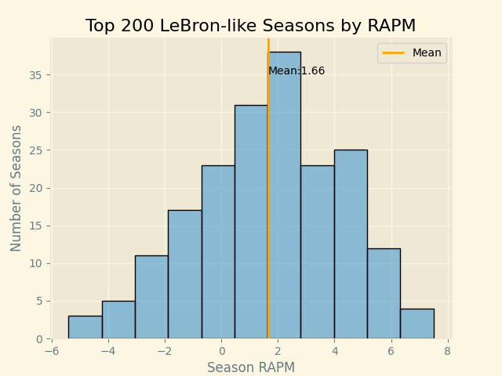
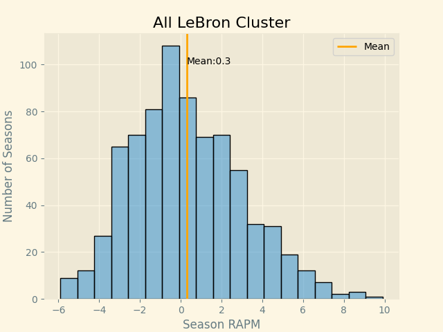
It seems that the players who are truly like LeBron add value above other players of a similar build and archetype. Splitting the players into bins of 20 players each makes this even clearer, as we can see the players that are closer to LeBron have more value according to RAPM, which eventually falls off the further away from LeBron the player is:
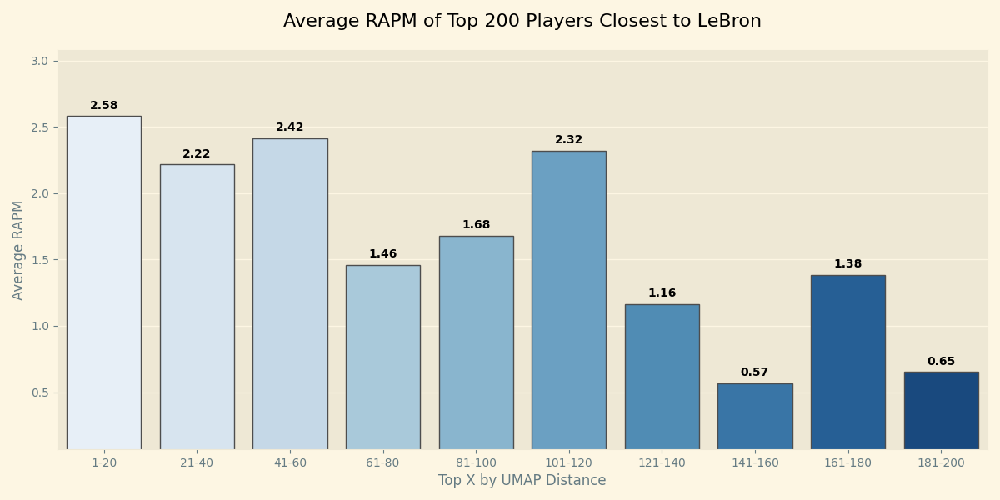
These top few brackets, ~1-120, are usually the true superstars with similar heights and offensive tools to LeBron, i.e., Luka, KD, etc. In fact, these same players are the ones that we saw moving away from the center of the cluster in the UMAP encoding, emphasizing the extra value that these players were able to add outside of what was previously possible for their archetypes. The players further away from LeBron and the rest of the cluster fail to see the same increase in value. Looking at the average value of the cluster as a whole shows that even when there are more of these outlier players, the average RAPM is actually lower than in previous seasons:
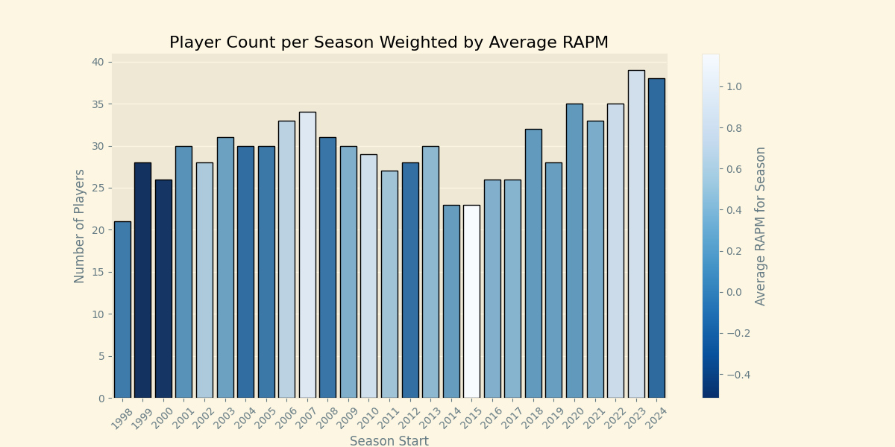
I believe that this is some indication of the oversaturation of this type of playstyle, or possibly showing that some players are forced into these larger offensive roles when they are not prepared to be; it could be hard to generalize LeBron’s playstyle for anyone but generational talents. Looking back at the UMAP from before, the latter argument is well supported, as LeBron (and KD) is just in an area all by himself:
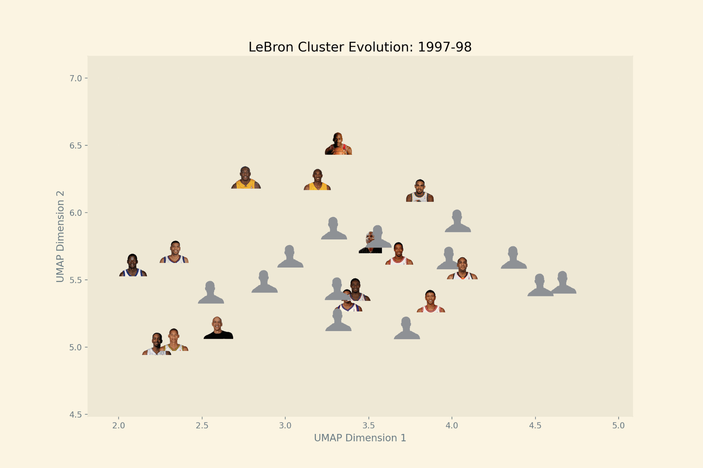
Both of them are in the same area as elite scoring shooting guards, while still being separated from the rest, with only a few other players really coming close to them over the years.
This data makes one thing clear: the way the league looks today has been undeniably influenced by superstars, LeBron being one of them. He has changed the league in ways that extend far beyond just winning playoff series and awards, but also how players similar to him play. Whether this comes from players in the league adapting or front offices taking up different drafting strategies, he allowed players of the same mold as him (Luka, KD, and some others) to flourish offensively and add more value than before to the team. However, as the archetype has become more common, it seems that this added value has been lowered, which speaks to just how special he is. While he may leave the league in the next year, the changes that he caused will be seen on the court for many seasons after that.